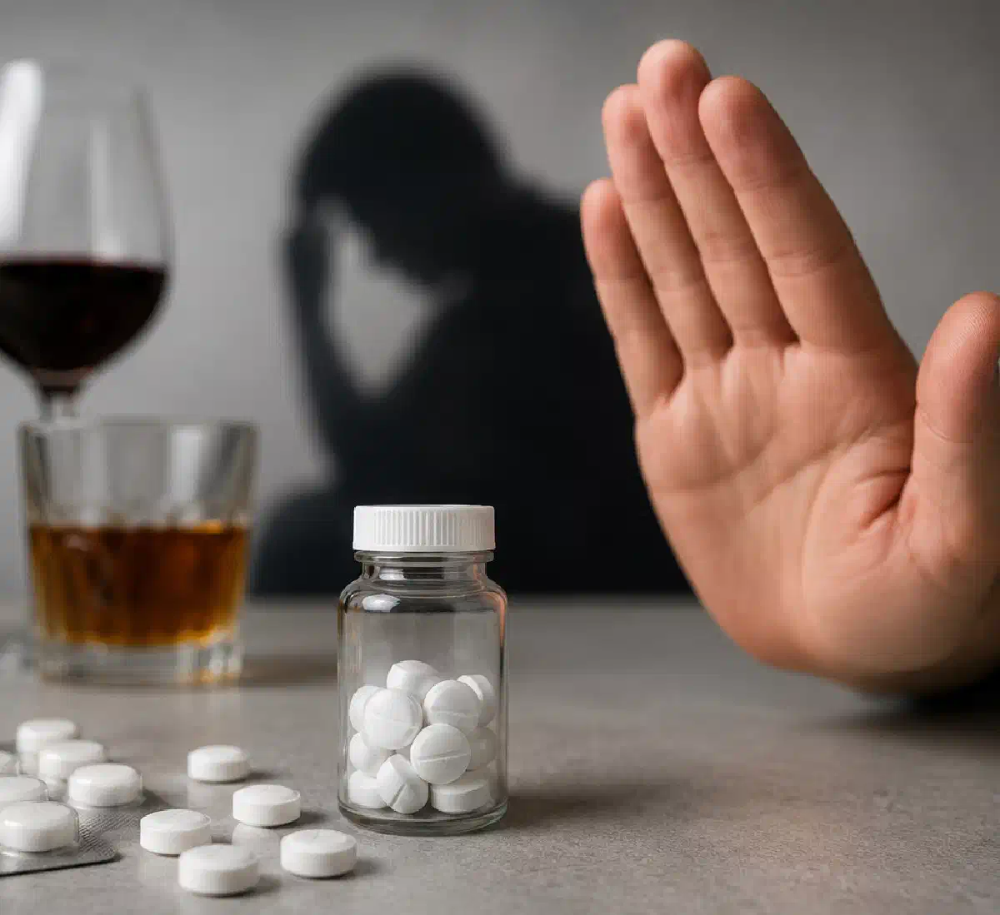

+38(068)
79 72 782
+38(068)
79 72 782Лекарство вызывающее отвращение к алкоголю
Медикаментозная поддержка на пути к трезвости


Бесплатная консультация, работаем круглосуточно 24/7
Медикаментозная поддержка на пути к трезвости

Дата написания: 11 июл. 2026 г.
Последнее обновление: 11 июл. 2026 г.
Лекарство, вызывающее отвращение к алкоголю, применяется в составе комплексного лечения алкогольной зависимости. Такие препараты не устраняют психологические причины употребления спиртного и не излечивают зависимость за одну процедуру. Их задача — создать медикаментозный барьер, при котором употребление алкоголя вызывает выраженную непереносимость и может привести к опасному ухудшению самочувствия. К наиболее известным средствам относятся препараты на основе дисульфирама и цианамида. Они могут выпускаться в форме таблеток, капель, инъекций или средств для имплантации. Конкретный препарат, способ его введения и продолжительность лечения определяет нарколог после осмотра пациента.
Перед началом лечения необходимо прекратить употребление алкоголя и пройти медицинскую консультацию. Если человек находится в состоянии опьянения, продолжает запой или имеет выраженный абстинентный синдром, сначала может потребоваться детоксикация. Дисульфирам нельзя давать человеку в состоянии алкогольного опьянения или без его полного информирования и согласия.
После попадания в организм алкоголь проходит несколько этапов переработки. Сначала этанол превращается в ацетальдегид, а затем специальные ферменты помогают преобразовать его в менее токсичные вещества.
Дисульфирам блокирует фермент, участвующий в дальнейшем расщеплении ацетальдегида. Если человек выпивает алкоголь на фоне действия препарата, концентрация этого токсичного соединения повышается. В результате могут появиться покраснение лица, пульсирующая головная боль, тошнота, рвота, сердцебиение, слабость и снижение артериального давления. Такая реакция может быть не только неприятной, но и опасной. Цианамид действует по сходному принципу, препятствуя нормальной переработке алкоголя. Препараты этой группы формируют не обычное вкусовое отвращение, а понимание того, что спиртное нельзя употреблять из-за риска тяжелой реакции.
Лекарство не формирует устойчивую трезвость автоматически. Медикаментозное лечение алкоголизма эффективнее, когда дополняется психотерапией, работой с мотивацией, поддержкой родственников и профилактикой повторного срыва. Современные рекомендации рассматривают препараты и психологические методы как взаимодополняющие части лечения алкогольной зависимости.
Непереносимость алкоголя могут вызывать таблетки на основе дисульфирама. К этой группе относятся препараты, которые выпускаются под различными торговыми названиями, включая Эспераль и Тетурам. После приема таблетки действующее вещество сохраняет способность влиять на переработку этанола. Поэтому запрещено употреблять не только крепкие напитки, но также пиво, вино, слабоалкогольные коктейли и другие продукты, содержащие спирт. Пациенту необходимо внимательно проверять состав:
Выбор таблеток нельзя основывать только на названии или отзывах. Нарколог должен учитывать состояние печени, сердца, нервной системы, принимаемые лекарства и продолжительность воздержания от алкоголя.
Уколы от алкоголизма применяются для создания более продолжительного медикаментозного барьера. В зависимости от выбранной программы препарат может вводиться внутримышечно или другим предусмотренным инструкцией способом.
Перед процедурой врач уточняет:
Укол не должен выполняться во время опьянения или тяжелой абстиненции. После запоя пациенту может потребоваться детоксикация, восполнение жидкости и электролитов, нормализация давления, пульса и сна. Важно понимать, что не каждый «укол от алкоголизма» вызывает отвращение к спиртному. Например, препараты налтрексона действуют иначе: они влияют на опиоидные рецепторы и могут уменьшать подкрепляющий эффект алкоголя. Дисульфирам, напротив, вызывает физическую непереносимость при употреблении спиртного.
Мидзо — торговое название капель, содержащих цианамид. Препарат применяется для поддержания отказа от алкоголя и формирования отрицательной реакции на употребление спиртного. Если пациент недавно употреблял алкоголь или находится в состоянии запоя, перед началом терапии может потребоваться вывод из запоя на дому Киев или лечение в стационаре. Капли не следует рассматривать как безобидное средство, которое можно самостоятельно добавлять в напитки или пищу. Цианамид способен вызвать выраженную реакцию при контакте с алкоголем, поэтому лечение должно проходить после консультации врача и с информированного согласия пациента.
Перед назначением необходимо исключить противопоказания и оценить риск лекарственных взаимодействий. Врач определяет допустимость применения препарата, режим лечения и необходимость медицинского наблюдения. Доступность Мидзо, правила его отпуска и зарегистрированные показания могут отличаться в зависимости от страны. Поэтому ориентироваться необходимо на действующую инструкцию и назначения врача, а не на рекомендации из интернета.
Эспераль и Тетурам относятся к препаратам дисульфирама. Они используются как вспомогательный метод поддержания трезвости у пациентов, которые осознанно согласились отказаться от употребления алкоголя. Эти таблетки не снимают похмелье, не предназначены для самостоятельного прерывания запоя и не устраняют симптомы алкогольной абстиненции. Если человек находится в состоянии интоксикации или недавно прекратил длительное употребление спиртного, сначала может потребоваться капельница от алкоголя на дому в Одессе или лечение в стационаре.
Дисульфирам рассматривается как средство профилактики употребления после прекращения алкоголя, а не как препарат для лечения острого состояния после запоя. Во время лечения пациент должен полностью исключить спиртное. Реакция может возникнуть даже после небольшой дозы алкоголя. Кроме того, действие дисульфирама иногда сохраняется до двух недель после прекращения приема, поэтому запрет на спиртное продолжает действовать и после отмены препарата. Длительность курса и схема приема определяются индивидуально. Самостоятельно увеличивать дозу, делать перерывы или возобновлять прием после употребления алкоголя нельзя.
Давать таблетки от алкоголизма без ведома пациента нельзя. Скрытое добавление препарата в еду или напитки может привести к тяжелой реакции, особенно если человек продолжает употреблять спиртное. Кроме медицинского риска, тайное лечение нарушает право пациента на информированное согласие. Человек должен знать:
Официальная информация о дисульфираме прямо предупреждает, что препарат нельзя давать пациенту без его полного ведома. Когда зависимый человек отказывается от лечения, родственникам лучше обратиться к наркологу или специалисту по мотивационному консультированию. Врач поможет правильно построить разговор, объяснить последствия употребления и предложить добровольный формат лечения.
Сочетание дисульфирама или цианамида с алкоголем приводит к накоплению ацетальдегида. Это токсичное вещество вызывает резкое ухудшение самочувствия и создает дополнительную нагрузку на сердце, сосуды, печень и нервную систему. На фоне такой реакции возможны:
Тяжесть реакции невозможно заранее точно предсказать. Она зависит от дозы алкоголя, количества препарата, состояния организма и сопутствующих заболеваний. Поэтому употребление даже небольшого количества спиртного нельзя использовать как способ «проверить действие» кодирования.
После употребления алкоголя на фоне действия дисульфирама или цианамида может развиться лекарственно-алкогольная реакция. Первые признаки иногда появляются вскоре после попадания спиртного в организм. У человека могут возникнуть тошнота, рвота, покраснение кожи, головная боль, дрожь, тревога, сердцебиение и падение давления. В тяжелых случаях возможны нарушение сердечного ритма, боль в груди, затрудненное дыхание, спутанность сознания и коллапс.
Если после таблетки, капель или укола человек выпил алкоголь и почувствовал себя плохо, нельзя пытаться лечить реакцию новой дозой спиртного, случайными таблетками или домашней капельницей. Необходимо прекратить употребление и обратиться за медицинской помощью. Срочная капельница от алкоголя помощь требуется при боли в груди, выраженной одышке, потере сознания, судорогах, сильной слабости, нарушении сердечного ритма или резком падении давления.
Противопоказания зависят от действующего вещества, формы препарата и состояния пациента. Медикаментозное кодирование может быть противопоказано или требовать особой осторожности при:
Острые заболевания, нестабильное артериальное давление, нарушения сердечного ритма и недавние судороги также требуют дополнительной оценки. Медицинские руководства рекомендуют соблюдать особую осторожность при сердечно-сосудистых заболеваниях и тяжелом нарушении функции печени. Наличие противопоказания к одному препарату не означает, что пациенту невозможно помочь. Врач может рассмотреть другие методы: психотерапию, противорецидивное лечение, реабилитационную программу или препараты с иным механизмом действия.
Побочные эффекты могут появляться даже при полном отказе от спиртного. На фоне применения дисульфирама возможны:
Реже могут возникать более серьезные осложнения, включая нарушения функции печени или поражение периферических нервов. Дисульфирам входит в число лекарственных средств, способных вызывать лекарственно-индуцированную нейропатию. При пожелтении кожи или глаз, потемнении мочи, выраженной слабости, стойкой боли в животе, онемении конечностей, нарушении координации или необычных психических симптомах необходимо прекратить самолечение и срочно связаться с врачом. Вероятность нежелательных реакций снижается, когда препарат назначается после обследования, а пациент соблюдает рекомендации и проходит контрольные консультации.
Консультация нарколога на дому необходима, чтобы определить, подходит ли пациенту лекарство, вызывающее непереносимость алкоголя. Врач выясняет длительность зависимости, частоту запоев, количество употребляемого спиртного и опыт предыдущего лечения.
Во время приема могут проводиться:
Если пациент недавно прекратил длительный запой, врач определит, можно ли начинать медикаментозное лечение сразу или сначала необходимо провести детоксикацию. Также нарколог объясняет механизм действия препарата, возможные побочные эффекты и правила поведения после процедуры. Пациент должен понимать, что кодирование требует полного отказа от спиртного и не заменяет дальнейшее лечение зависимости.
Стоимость лечения зависит от выбранного препарата, формы введения, продолжительности программы и объема предварительного обследования. Таблетки обычно обходятся дешевле длительных инъекционных или имплантационных программ, однако требуют регулярного приема и соблюдения назначенной схемы.
В общую стоимость могут входить:
Сравнивать программы только по цене неправильно. Необходимо учитывать действующее вещество, медицинские показания, противопоказания и реальную продолжительность действия препарата.
Правила продажи препаратов зависят от страны, действующего вещества и формы выпуска. Некоторые средства могут формально находиться в свободной продаже, а другие отпускаются только по рецепту. Однако возможность приобрести лекарство без рецепта не означает, что его безопасно принимать без врача.
Перед использованием необходимо установить:
Не следует покупать препараты с неизвестным составом, без инструкции и документов о происхождении. Под видом «натуральных капель от алкоголизма» могут продаваться средства с недоказанной эффективностью или скрытыми действующими веществами. Безопаснее получать препарат по назначению нарколога и приобретать его в легальной аптечной сети.
Эффективность медикаментозного лечения повышается, когда препарат используется не изолированно, а как часть комплексной программы. Алкогольная зависимость связана не только с физической реакцией на спиртное, но и с изменением поведения, привычек и способности контролировать употребление. Она может сохранять риск рецидива даже после продолжительного периода трезвости. Комплексная программа может включать не только капельницы от запоя:
Пациенту полезно заранее составить план действий на случай появления тяги к алкоголю. Важно избегать компаний и ситуаций, связанных с употреблением, не прекращать лечение самостоятельно и своевременно сообщать врачу о побочных эффектах. Медикаментозный барьер создает дополнительную защиту, но устойчивый результат во многом зависит от осознанного решения пациента и продолжения терапии.
Анонимное выведение из запоя Харьков и лечение алкогольной зависимости позволяет обратиться к наркологу конфиденциально, пройти консультацию и подобрать индивидуальную программу помощи. Формат лечения определяется состоянием пациента и может включать прием в клинике, лечение в стационаре или отдельные процедуры на дому, когда это медицински допустимо. Во время обращения врач оценивает тяжесть зависимости, наличие запоя, состояние внутренних органов и готовность человека отказаться от употребления. После этого может быть рекомендована детоксикация, медикаментозное кодирование, психотерапия или комплексная реабилитация.
Анонимность помогает снизить страх перед обращением за помощью, однако не отменяет необходимости честно сообщать врачу о количестве алкоголя, заболеваниях и принимаемых лекарствах. Сокрытие такой информации повышает риск осложнений. Лекарство, вызывающее отвращение к алкоголю, может стать частью лечения, но назначать его должен нарколог. Наиболее безопасный и результативный подход — добровольное лечение, полный отказ от спиртного, медицинское наблюдение и работа с психологическими причинами зависимости.

Статья проверена экспертом
Робулец Ольга
Врач нарколог, ординатор
Возможно интересная статья:
Какой укол вызывает отвращение к алкоголю

Да, мы строго соблюдаем полную конфиденциальность на всех этапах лечения. Информация о пациенте, диагнозе и прохождении терапии не передаётся третьим лицам. Обращение к нам не влечёт постановку на учёт. Вы можете быть уверены в безопасности и анонимности.
Программа лечения разрабатывается индивидуально после консультации со специалистом. Учитываются вид зависимости, её длительность, физическое и психологическое состояние пациента. Такой подход позволяет повысить эффективность терапии и снизить риск срыва. Мы не используем шаблонные решения.
Да, мы сопровождаем пациентов и после основного курса лечения. Проводятся консультации, рекомендации по адаптации и профилактике рецидивов. При необходимости возможна дальнейшая психологическая поддержка. Это помогает сохранить результат и вернуться к полноценной жизни.
Номер телефона:
+380 (68) 797 27 82
+380 (50) 021 69 57
Адрес наркологического центра вашего города уточняйте по
телефону
Работаем в: Киеве, Одессе, Львове, Харькове, Днепре,
Запорожье, Черкассах, Чугуеве, Черноморске, Каменском
Telegram: t.me/umbrellaplus
График работы: Круглосуточно